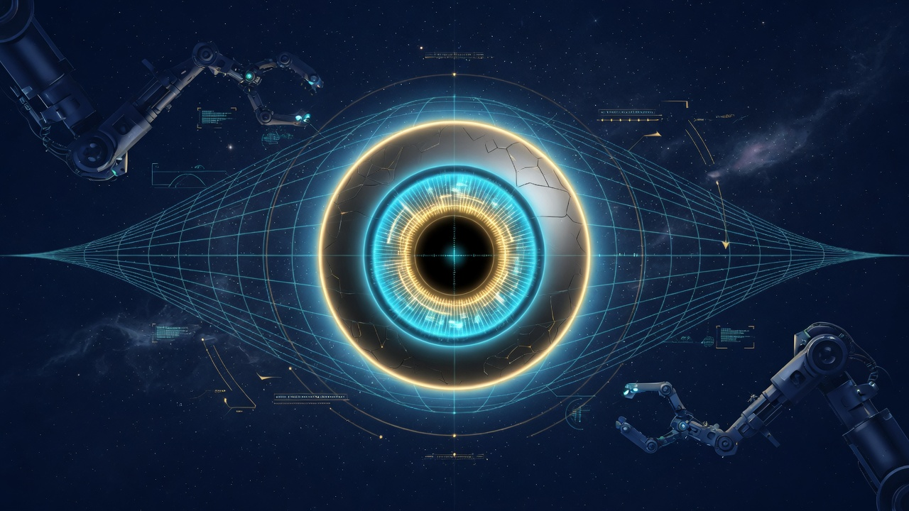

Chapter 02 · ZOCRSM1 Vision Ingress
Learning objectives
- Trace a frame from
lookthrough preserve and pattern layers. - Explain bullet_train fast path versus full cascade.
- Name offense actions on threat ingress.
- Configure vigilance without mandatory streaming.
On the way
Chapter 2 is the engineering spine of sight. You will follow one frame from operator intent through vault seals, learn when bullet_train skips heavy paths, and see how vigilance watches without flashing the display.

- look → preserve → pattern
- bullet_train 465 fps doctrine
- offense on threat
- sentinel vigilance
The ingress pipeline
ZOCRSM1 is the Implemented field vision format for Final_Eye — sub-micron video doctrine with WRDT-inspired frame envelopes and a SHA-256 hash chain. The pipeline begins when an operator or agent calls POST /api/look or arms robotics. Doctrine mandates silent capture: no screen flash, no whiteout tools — additives registry rejects flash paths before vault.
Modules chain in order: zocr_capture grabs a frame via approved additives (XWD silent, grim, mss); zocr_preserve runs the failover cascade; zocr_pattern stamps provenance weave and scans for foreign grids; zocr_offense records strikes when threats match; optional zocr_video seals into ZOCRSM1 transport. Every step appends to jsonl ledgers you can grep after an incident.
Preserve cascade — RTX, XWD, hold
Preserve is not optional vanity — it is the RTX → XWD → hold failover that keeps last-good frames when live capture fails. Implemented zocr_preserve.py writes under data/preserve/ with threat doctrine from Hostess7 alignment. When bullet_train mode runs, preserve cascade may be skipped per profile to hit emit fps targets — that trade is documented in data/zocrsm1-benchmark.json.
Operators should verify preserve status after long sessions: GET /api/preserve returns cascade posture and last-good paths. If thermo or load spikes, the assist contract narrows capture width before preserve thrashes — bounded tenant behavior, not runaway capture.
Pattern security — foreign weave rejection
Real internal imaging requires provenance. Implemented pattern_stamp embeds a 64-bit corner weave from session, sequence, and mandate digest. pattern_scan rejects moiré, foreign grids, and injection patterns before frames enter the vault. This is offense at the pixel layer — vision defense starts at ingress, not in a quarterly audit.
python3 zocr_watch.py pattern-scan data/preserve/last-good.png
Offense layer — defense requires offense
Doctrine: Defense of vision requires offense. The offense module maps threats to acted responses: seal_threat, pattern_strike, reject_and_failover. Entity eyeballs may forward to weapons when truth parameters fire. This is not metaphor for “being aggressive” — it is Implemented ledgered action you can replay from data/offense-ledger.jsonl.
Vigilance — autonomous watch
Vigilance is how the eye operates on its own without a human clicking Look every five seconds. Implemented vigilance_start with profile sentinel runs on an interval (default ~4s). It respects kill switches and mandate gates — if vision is tripped, vigilance stops cleanly. Start: ./start.sh --vigilance or API. Stop: vigilance-stop. Autonomous, but sovereign: local choke points still apply.
Stereo rig and ocular spectrum
Beyond monocular look, Final_Eye supports stereoscopic rigs and species-class eye profiles. Implemented zocr_stereo.py presets: monocular, stereo_human, stereo_bird, compound_six. The ocular spectrum module teaches photoreceptor weights per profile — human, bird, raptor, reptile, fish, insect, mammal_night, snake_pit. This is how one sovereign eye adapts perception without importing a cloud model that phones home.
Configure rig: POST /api/rig/configure {"preset":"stereo_bird"}. Perceive merges left/right or compound paths into witness JSON for entity eyeballs. Every perceive hook still passes pattern and preserve gates — autonomy does not mean skip security.
Week-one ingress lab
./start.sh --look— one frame, jsonl session append.GET /api/preserve— note last-good path and cascade state.python3 zocr_watch.py pattern-scan data/preserve/last-good.pngif file exists.- Start vigilance sentinel; watch
data/vigilance-log.jsonlfor 60s; stop cleanly. - Trip vision kill; confirm look blocked; release all switches.
Honest rocks — ingress
| Claim | Label | Verify |
|---|---|---|
| Silent capture default | Implemented | silent_capture_policy() |
| 465.5 fps bullet_train | Measured | zocrsm1-benchmark.json |
| Cloud omniscient vision | Rejected — local scope |
Correlate stderr, preserve json, and offense ledger after any anomaly. Time is linear — logs are timeline. The eye may run alone in vigilance, but it never hides its receipts.
Ingress enemies — what triggers offense
At ingress, enemies are lie markers detected before vault — not people. Pattern scan surfaces grid_jam, moire_weave, provenance_mismatch; preserve meta may flag threats; code seal failure adds corrupt_frame. Offense records acted tokens; entity eyeballs may forward to weapons when truth parameters fire. Teach names the abstract enemy: signal that walks backward on truth. Operators grep ledgers; the eye strikes on doctrine, not drama.
Chapter summary
Re-read the honesty labels on every claim you repeat to management. Grep beats screenshots.
Study questions
- What does bullet_train skip per frame and why?
- How does pattern_stamp prove provenance?
- When would you start vigilance versus a one-shot look?